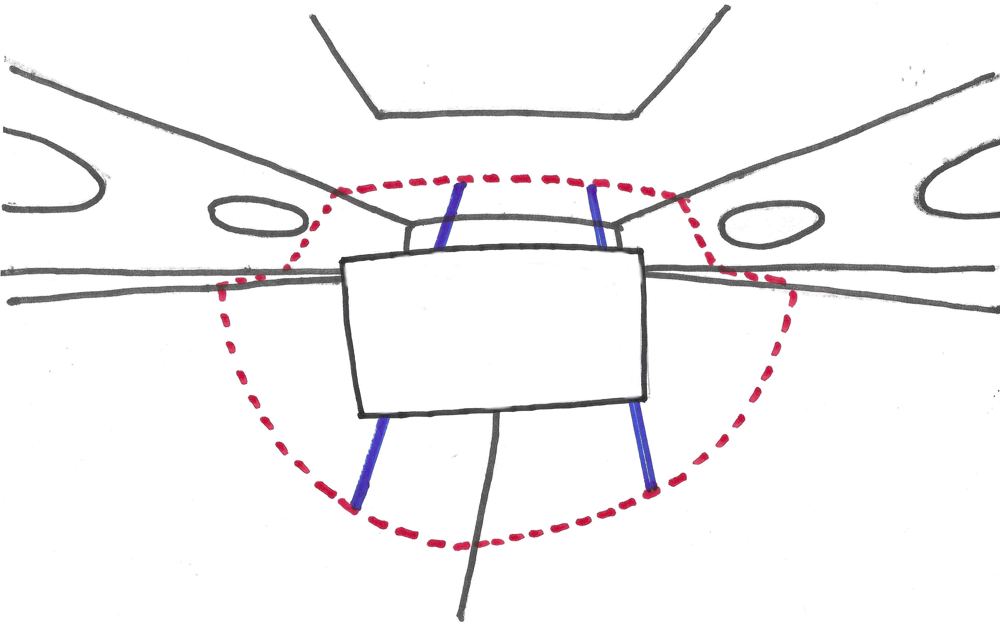

Un tuto Passe-Coque
Un tuto Passe-Coque
Faire une cloison dans un bateau, même sans avoir de scanner 3D !! Incroyable, non ?
Un pimenton - qu'est-ce que c'est ?
Un pimenton, c'est cet outil qui va permettre de relever et de reproduire la forme d'une cloison à l'intérieur d'un bateau, en forme ou
à bouchains.
C'est en général en bois, ça fonctionne sans électricité ni électronique. Et même la nuit si ça se trouve !
Soit dit en passant, on n'a pas attendu l'électricité - ni l'électronique - pour construire des bateaux...
Les scanners 3D et les découpes CNC (Computer Numerical Control) sont certes des outils précis et fort pratiques, mais leur prix
peut ne pas laisser indifférent. On va voir ci-après, qu'avec un pimenton, le prix de la réalisation d'une cloison peut se
limiter... au prix de la cloison.
Il ne s'agit - toujours pas - de dénigrer les avancées technologiques, surtout lorsqu'elles fonctionnent sans dégrader le reste, mais bien
de préserver et transmettre ces techniques "ancestrales", non pas pour des raisons historiques ou nostalgiques, mais bien parce qu'elles continuent de
fonctionner, et qu'elles sont disponibles - comme on va le voir - sans avoir besoin de recourir aux compétences d'un archéologue.
- Indiana Jones
Comment ça marche
L'idée est la suivante :
- On veut poser une cloison à un endroit donné dans le bateau. Le bateau est vide, il n'y a que la coque et le pont.
- À cet endroit, on va poser des tasseaux - provisoires - verticalement, là ou la cloison devra finalement se trouver.
- Sur ces tasseaux, on vient fixer un morceau de bois plat - comme un contre-plaqué (si besoin, même un bout de placo fera l'affaire).
- Ensuite, on viendra repérer sur ce contre-plaqué la position du pimenton lorsque son extrémité touche la coque, ou le pont.
- Lorsqu'on a suffisament de repères, on désolidarise le contre-plaqué des tasseaux (qu'on peut retirer), et on le sort du bateau.
- On pose alors ce contre-plaqué sur celui qui va servir à faire la cloison attendue.
-
Et en remettant le même pimenton sur le premier CP, grâce aux empreintes tracées préalablement, on peut - à la pointe du pimenton - reproduire
la ligne qui joint les points de la coque, et ceux du pont !
- Ne reste plus qu'à faire la découpe.
Des détails, peut-être ?
Objectif
Le but de la manœuvre :
Dans un bateau vide comme celui-ci...
On veut poser un cloison comme celle-ci (en rouge).
Un pimenton
On se le taille dans un bout de CP, il a un côté pointu, et il y a des encoches tout le long du "manche". Pour des
raisons bientôt évidentes, il est de bon ton qu'aucune des encoches ne ressemble à une autre.
La longueur du pimenton dépend des tailles respectives de la cloison à faire, et de la taille du morceau de CP sur lequel on
va faire le relevé des formes, mentionné dans le paragraphe suivant.
Le nombre, la taille, et la forme des encoches sont à la disposition de l'usager !
Les tasseaux et le support du tracé
Le rôle de ces tasseaux sera donc de soutenir - en place - le morceau de CP (ou d'autre chose) sur
lequel on relevera les différentes positions du pimenton. Ce CP n'a bien évidemment aucun rôle structurel,
le plus important est que lors de ces relevés, il soit exactement à la place de la future cloison.
On les maintient en place avec des cales, des coins, voire du mastic ou de la colle thermofusible.
Le CP sur lequel on effectuera les relevés doit être à la fois assez grand pour que les relevés soient aussi nombreux et précis que possible,
et pas trop grand pour pouvoir... rentrer dans le bateau.
On repère soigneusement la position de la cloison à réaliser, et on fixe les tasseaux (en bleu)
dans ce plan. Il faut faire attention à ce que les tasseaux soient bien fixés, qu'ils ne bougent pas durant
les opérations ultérieures. Les pointillés rouges ne sont là que pour la clarté de
la figure.

On peut alors fixer sur les tasseaux (serre-joints, vis, pourvu que ça tienne) ce morceau de CP, destiné à
recevoir les relevés.
Le tracé
Attention, ça commence !
On attrappe le pimenton, on en place la pointe en contact avec la coque ou le pont, et avec un crayon, on en trace les contours
sur le CP.
On procède ainsi autant de fois que possible, afin d'être sûr d'avoir suffisamment de points ainsi identifiés pour
reproduire le contour de la cloison.
On peut ensuite retirer le CP ainsi marqué de ses tasseaux, on va pouvoir attaquer le report.
On n'a que trois relevés sur la figure..., on en aura bien plus en réalité.
Il est sans doute opportun de relever les livets, la quille, et son homologue sous le roof, afin de cerner les dimensions
maximales de la future cloison. Ces relevés-là pourront être faits d'une autre couleur que les autres.
Le report des points
Cette opération est en fait l'inverse de la précédente, et l'objectif final de tout le processus.
On va poser le CP de l'étape précédente sur la grande feuille de CP qui deviendra la cloison finale.
C'est là qu'on va être content d'avoir relevé les livets, la quille, et son homologue sous le roof.
On aura ainsi les plus grandes dimensions de la cloison, on pourra donc la positionner efficacement sur la grande feuille de CP.
On reporte alors la position de la pointe du pimenton, pour chaque "empreinte" du manche dessinée sur le support,
et on reconstitue la forme de la cloison.
Il n'y a plus qu'à découper la cloison, à vos sauteuses !
Ne reste plus qu'à faire rentrer la cloison fraichement découpée dans le bateau.
Mais c'est un autre sujet !
À voir aussi : La règle magique.
© 2025, Passe-Coque